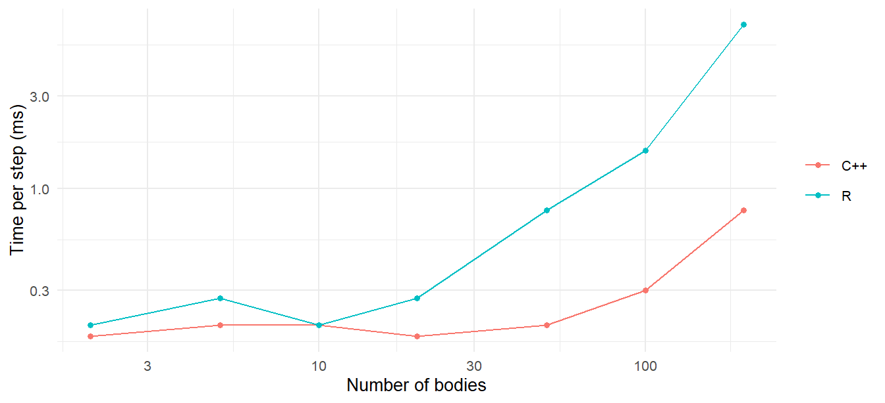

dx_mat <- outer(x, x, "-") * -1 # mat[j, k] = x[k] - x[j]
dy_mat <- outer(y, y, "-") * -1
dz_mat <- outer(z, z, "-") * -1
r_mat <- sqrt(dx_mat^2 + dy_mat^2 + dz_mat^2 + softening^2)
diag(r_mat) <- Inf # a body does not pull on itself
mass_mat <- matrix(mass, nrow = n, ncol = n, byrow = TRUE)
a_mat <- G * mass_mat / r_mat^2
ax <- rowSums(a_mat * (dx_mat / r_mat))
ay <- rowSums(a_mat * (dy_mat / r_mat))
az <- rowSums(a_mat * (dz_mat / r_mat))15 The C++ Engine
Chapter 3 wrote the N-body acceleration in plain R and warned that it was slow. This chapter looks at what the package does instead: a forty-line C++ function that computes the same sum, the vectorized R version that stands in when it is unavailable, and the R loop that calls one or the other at every step. The most useful thing in the chapter is not the C++. It is the measurement of where the time actually goes, which is not where most people expect, and what that means for how big a system you can run.
15.1 Why compiled code
R is an interpreted language, and a for loop in R pays an interpretive overhead on every iteration: each +, each index, each assignment goes through the evaluator. For the double loop in Chapter 3’s accelerations(), that is a few microseconds per pair, which for ten bodies and a hundred thousand steps is minutes, and for a hundred bodies is hours. C++ compiles the same loop to machine instructions that run a hundred or a thousand times faster.
Rcpp (Eddelbuettel and François 2011) is the bridge. You write a C++ function that takes R vectors as arguments and returns an R object, mark it with a comment, and Rcpp generates the glue that lets R call it as if it were an R function. The package’s kernel lives in src/enginer.cpp and is exported to R as calc_acceleration_cpp().
15.2 The kernel, line by line
Here it is, in full. It is released under the MIT license with the rest of the package, and it is short enough to read in one sitting:
#include <Rcpp.h>
using namespace Rcpp;
// [[Rcpp::export]]
List calc_acceleration_cpp(NumericVector x, NumericVector y, NumericVector z,
NumericVector mass, double G,
double softening = 0.0) {
int n = x.size();
NumericVector ax(n), ay(n), az(n);
// If no gravity or only one body, return zeros
if (G == 0 || n <= 1) {
return List::create(Named("ax") = ax, Named("ay") = ay, Named("az") = az);
}
double eps2 = softening * softening;
for (int j = 0; j < n; j++) {
for (int k = 0; k < n; k++) {
if (j != k) {
// Distance components (direction from j toward k)
double dx = x[k] - x[j];
double dy = y[k] - y[j];
double dz = z[k] - z[j];
// Total distance with optional softening to prevent 1/r^2 singularity
double r = sqrt(dx*dx + dy*dy + dz*dz + eps2);
if (r > 0) {
// Scalar acceleration: a = G * M_k / r^2
double a = G * mass[k] / (r*r);
// Decompose into directional components
ax[j] += a * (dx / r);
ay[j] += a * (dy / r);
az[j] += a * (dz / r);
}
}
}
}
return List::create(Named("ax") = ax, Named("ay") = ay, Named("az") = az);
}Walk through it against Equation 3.3.
The signature takes the three position vectors, the mass vector, \(G\), and the softening length. NumericVector is Rcpp’s wrapper for an R numeric vector; it is passed without copying, so handing a thousand positions to the kernel costs nothing. // [[Rcpp::export]] is the marker that tells Rcpp to generate the R-callable wrapper.
The early return handles G = 0 (Chapter 2’s zero-gravity sandbox) and a lone body.
eps2 is \(\varepsilon^2\), computed once. The double loop runs over all ordered pairs \((j, k)\), \(j \ne k\), exactly like Chapter 3’s R version. For each pair it forms the difference vector pointing from \(j\) toward \(k\) and the softened distance \(r = \sqrt{dx^2 + dy^2 + dz^2 + \varepsilon^2}\), which is Chapter 6’s \(r_{\mathrm{soft}}\). The scalar \(a = Gm_k/r^2\) times the unit vector \((dx, dy, dz)/r\) is \(Gm_k\,(\mathbf{r}_k - \mathbf{r}_j)/r^3\), the second form of Equation 3.3, accumulated into body \(j\)’s acceleration. With \(\varepsilon = 0\) and no overlapping bodies, this is exact Newtonian gravity; the (r > 0) guard only matters if two bodies sit at the same point with no softening.
The return value is a list of three vectors, which R receives as a named list with $ax, $ay, $az. That is the whole engine. There is no physics in the package that is not in this function.
One thing the kernel does not do: it computes each pair twice, once as \((j,k)\) and once as \((k,j)\). Newton’s third law says the two are equal and opposite, so a loop over \(j < k\) that adds the force to one body and subtracts it from the other would do half the work. The package does not bother, because, as the benchmarks below show, for the systems it is built for the kernel is not where the time goes.
15.3 The R fallback
If the compiled code is not available, simulate_system() uses a pure-R version built on outer():
This is the same computation with the double loop replaced by \(n \times n\) matrices. outer() builds the matrix of all pairwise differences in one call, the diagonal is set to infinity so that the self-term contributes zero, and rowSums() does the sum over \(k\). Every operation is vectorized, so the loop still happens in compiled code inside R’s own internals; the cost is that each step allocates half a dozen \(n\times n\) matrices. For small \(n\) it is nearly as fast as the C++ kernel; for large \(n\) the allocations dominate.
The two engines should agree to rounding error, and do:
cluster <- function(n, seed = 1) {
set.seed(seed)
sys <- create_system()
for (i in seq_len(n)) {
sys <- add_body(sys, paste0("star", i), mass = mass_sun,
x = rnorm(1, sd = 1e13), y = rnorm(1, sd = 1e13), z = rnorm(1, sd = 1e13),
vx = rnorm(1, sd = 1e3), vy = rnorm(1, sd = 1e3), vz = rnorm(1, sd = 1e3))
}
sys
}
sys20 <- cluster(20)
with_cpp <- simulate_system(sys20, time_step = seconds_per_day,
duration = seconds_per_day * 50, use_cpp = TRUE)
without <- simulate_system(sys20, time_step = seconds_per_day,
duration = seconds_per_day * 50, use_cpp = FALSE)
max(abs(with_cpp$x - without$x) / abs(without$x))
#> [1] 015.4 Where the time goes
The kernel is C++, but the loop that calls it is R. Here is the shape of simulate_system(), stripped to its skeleton:
steps <- seq(0, duration, by = time_step)
results <- vector("list", length(steps))
for (i in seq_along(steps)) {
state$time <- steps[i]
results[[i]] <- state # record this step
if (i == length(steps)) break
accels <- calc_acceleration(state) # kernel call 1
state$x <- state$x + state$vx * dt + 0.5 * accels$ax * dt^2 # (and y, z)
new_accels <- calc_acceleration(state) # kernel call 2 (Verlet only)
state$vx <- state$vx + 0.5 * (accels$ax + new_accels$ax) * dt # (and vy, vz)
}
dplyr::bind_rows(results)state is a tibble with one row per body. Every step does two kernel calls, six column assignments on that tibble, and one list assignment; at the end, bind_rows() stacks as many tibbles as there were steps, and the run’s settings (G, softening, method, time_step) are attached to the result as attributes, which is how conserved_quantities() and continue_simulation() know them without being told. For a handful of bodies the kernel call takes microseconds, and everything else takes longer than it does. Measure it:
time_run <- function(n, use_cpp, steps = 400) {
sys <- cluster(n)
elapsed <- system.time(
simulate_system(sys, time_step = seconds_per_day,
duration = seconds_per_day * steps,
use_cpp = use_cpp, softening = 1e10)
)[["elapsed"]]
tibble(n = n, engine = if (use_cpp) "C++" else "R",
ms_per_step = elapsed / steps * 1e3)
}
bench <- bind_rows(lapply(c(2, 5, 10, 20, 50, 100, 200), function(n) {
bind_rows(time_run(n, TRUE), time_run(n, FALSE))
}))
bench
#> # A tibble: 14 × 3
#> n engine ms_per_step
#> <dbl> <chr> <dbl>
#> 1 2 C++ 0.175
#> 2 2 R 0.200
#> 3 5 C++ 0.200
#> 4 5 R 0.275
#> 5 10 C++ 0.200
#> 6 10 R 0.200
#> 7 20 C++ 0.175
#> 8 20 R 0.275
#> 9 50 C++ 0.200
#> 10 50 R 0.775
#> 11 100 C++ 0.300
#> 12 100 R 1.57
#> 13 200 C++ 0.775
#> 14 200 R 7bench |>
ggplot(aes(n, ms_per_step, color = engine)) +
geom_line() + geom_point() +
scale_x_log10() + scale_y_log10() +
labs(x = "Number of bodies", y = "Time per step (ms)", color = NULL)
Read the C++ curve from the left. For two bodies and for twenty, the time per step is about the same: that is the fixed cost of the R loop, the tibble updates, and the call into the kernel, and it is independent of \(n\). The kernel’s \(n^2\) term is invisible until it grows to match that overhead, somewhere around fifty bodies, after which the curve bends up with slope 2 on the log-log plot: doubling \(n\) quadruples the time. The R fallback has a higher floor, because outer() and friends allocate matrices on every call, and reaches the \(n^2\) regime sooner.
The other large cost is at the end. bind_rows() on sixty thousand small tibbles, which is what Chapter 8’s run produced, is slow, because each tibble has to be checked and copied:
one_step <- get_bodies(cluster(9))
pieces <- replicate(10000, one_step, simplify = FALSE)
system.time(bind_rows(pieces))[["elapsed"]]
#> [1] 0.06Scale that by six for a 60,000-step run. For long runs of small systems, assembling the output tibble takes about as long as integrating it. The lesson for a user is simple: the number of recorded steps is what you pay for, and it is also what sets the size of the output. A simulation that records every hour for a century produces 876,000 rows per body whether or not it needed to.
15.5 The \(n^2\) wall
Extrapolate the C++ curve. If the kernel costs \(c\,n^2\) per evaluation, the \(n = 200\) point gives \(c\), and
c_kernel <- bench |> filter(engine == "C++", n == 200) |> pull(ms_per_step) / 200^2
tibble(n = c(1e3, 1e4, 1e5),
ms_per_step = c_kernel * n^2,
hours_per_10000_steps = ms_per_step * 1e4 / 3.6e6)
#> # A tibble: 3 × 3
#> n ms_per_step hours_per_10000_steps
#> <dbl> <dbl> <dbl>
#> 1 1000 19.4 0.0538
#> 2 10000 1937. 5.38
#> 3 100000 193750. 538.A thousand bodies is comfortable. Ten thousand is a long evening for a short run. A hundred thousand is out of the question, and a galaxy has a hundred billion stars. Research codes get around the wall in three ways:
- Tree codes (Barnes and Hut 1986) group distant bodies into cells and use each cell’s center of mass instead of its members, reducing the cost to \(O(n\log n)\) at the price of a controllable approximation. Chapter 3’s shell theorem is the justification: from far away, a clump of mass acts like a point.
- The fast multipole method (Greengard and Rokhlin 1987) takes the idea further, expanding the potential of each cell in a series, and reaches \(O(n)\).
- Hardware. The pairwise sum is embarrassingly parallel, and GPUs compute billions of pair interactions per second. Specialized hardware for exactly this sum, the GRAPE boards of the 1990s and 2000s, was for a time the fastest computing in the world for anything.
orbitr does none of these, and it should not. Each of them is a large piece of engineering whose approximation error has to be understood as carefully as the integrator’s, and none of them changes what a user of this package wants: a tidy table of where a dozen bodies went. The tidy table is itself the deeper limit. At \(n = 10^4\) bodies and \(10^4\) steps the output is \(10^8\) rows, about seven gigabytes in memory, and the data frame would fail before the kernel became the problem. Big N-body simulation does not keep every position at every step; it writes snapshots to disk and analyzes them later. That is a different kind of tool.
15.6 Changing the physics
Because every force the package computes is in one function, adding a force is a small change to that function. A drag term proportional to velocity would need the velocities passed in (three more NumericVector arguments) and three lines inside the outer loop; Earth’s oblateness would need Earth identified and a dozen lines; the relativistic correction of Chapter 16, a few more. None of it is hard, and all of it is on the roadmap. If you want to try, the package is on GitHub, Rcpp::sourceCpp() compiles a modified kernel in seconds, and simulate_system()’s use_cpp argument is the switch.
Exercises
Exercise 15.1 Modify the kernel (or Chapter 3’s R version) to loop over \(j < k\) only, applying each pair’s force to both bodies with opposite signs. Confirm it gives the same accelerations, and time it against the original for \(n = 200\).
Exercise 15.2 Run a two-body system for one year with hourly steps, then again with daily steps, and compare the elapsed times. By what factor does the cost change, and what does that say about where the time goes?
Exercise 15.3 get_energy() is also \(O(n^2)\) per time step: its potential-energy sum uses the same outer() matrices as the R fallback. Time it on the 200-body run and compare with the simulation itself. Which is more expensive, and why?
Exercise 15.4 simulate_system() evaluates the acceleration twice per Verlet step, but \(\mathbf{a}_{n+1}\) of one step is \(\mathbf{a}_n\) of the next. Sketch how the loop would change to reuse it, and estimate from the benchmark how much time it would save for \(n = 10\) and for \(n = 200\).